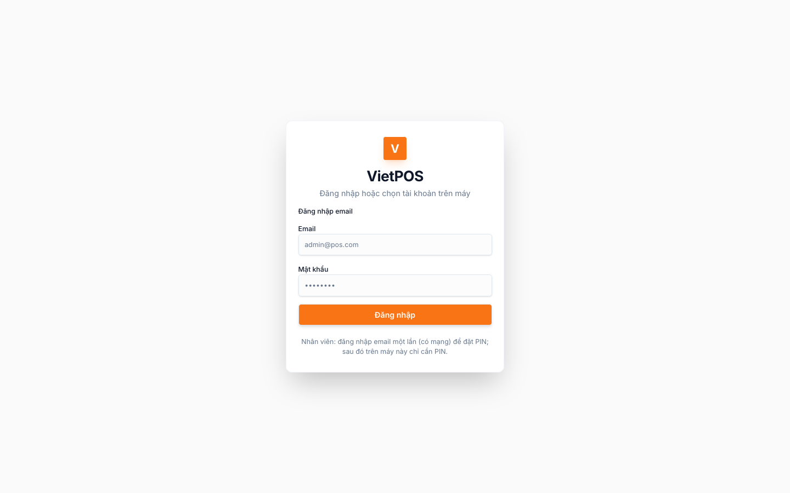
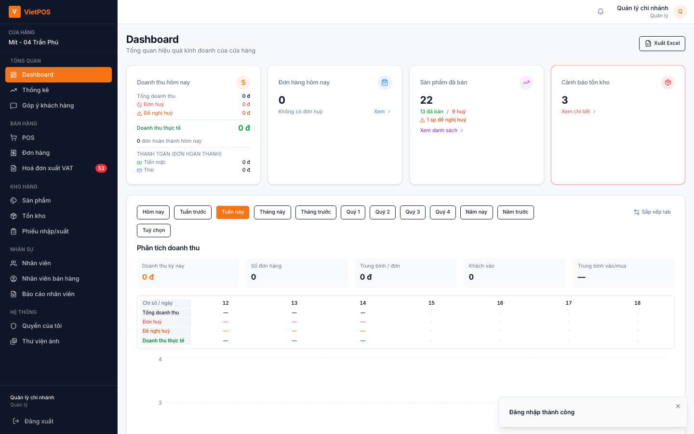
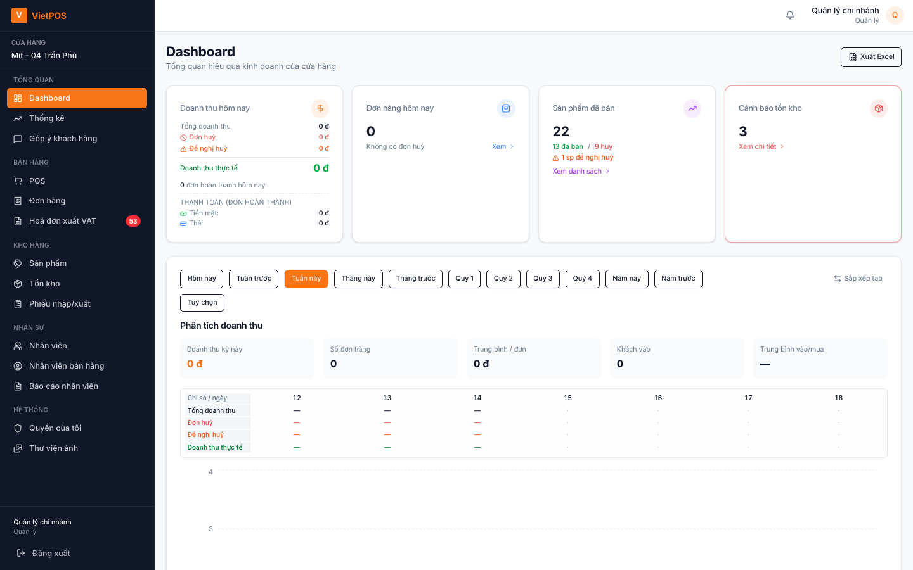
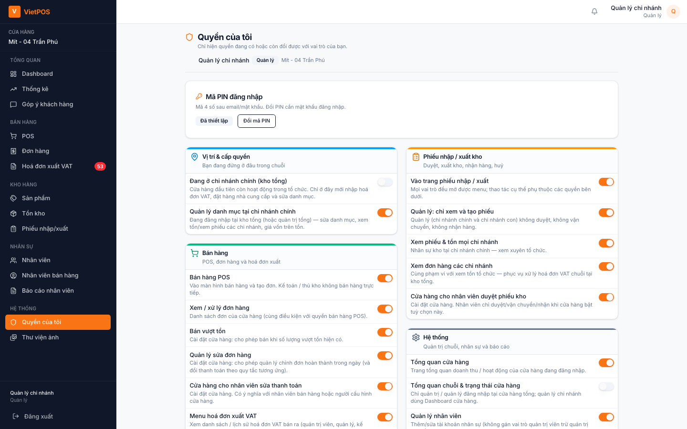
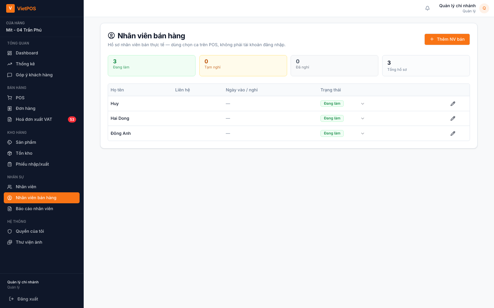
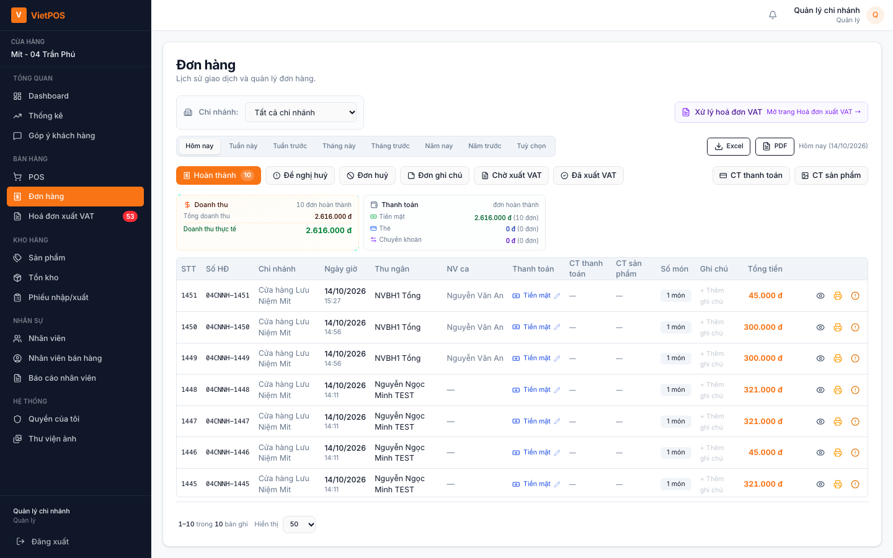
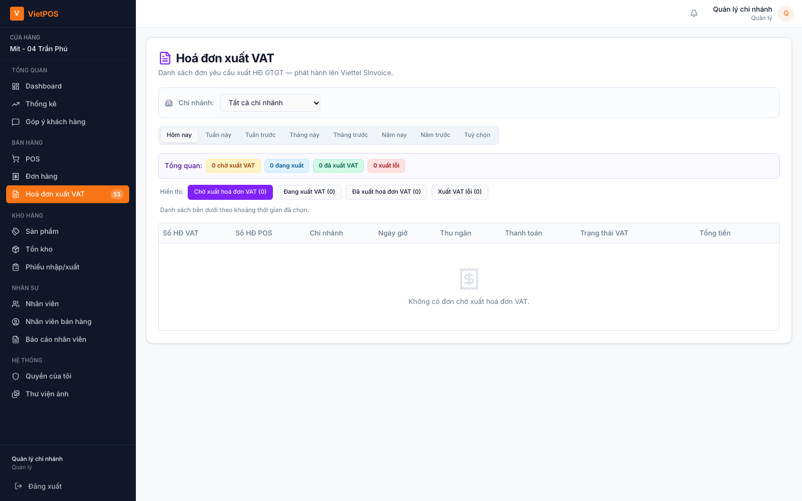
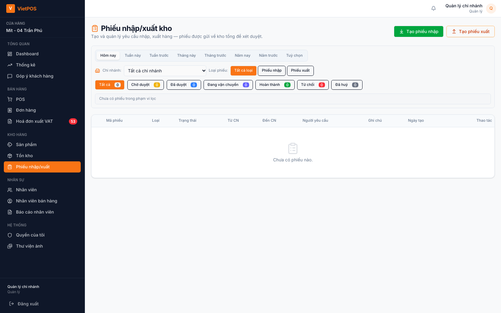
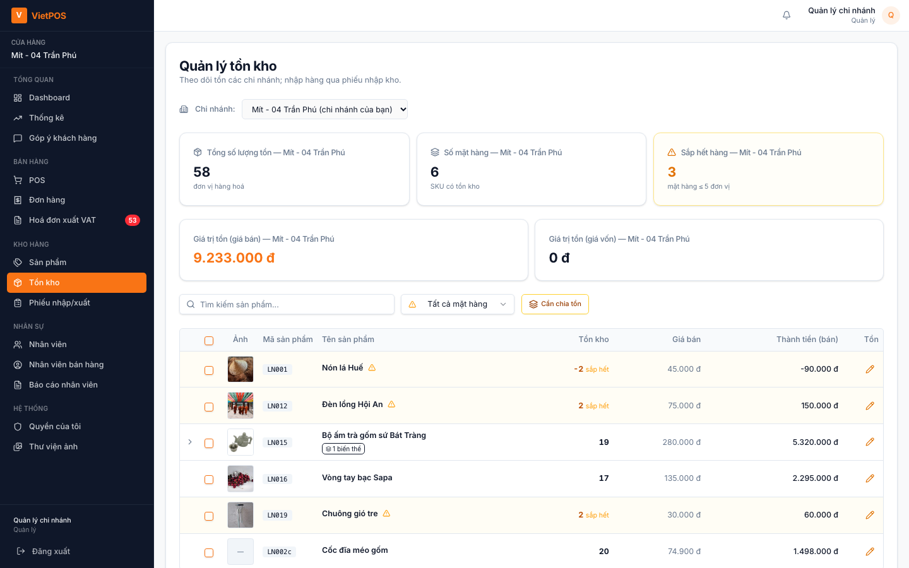
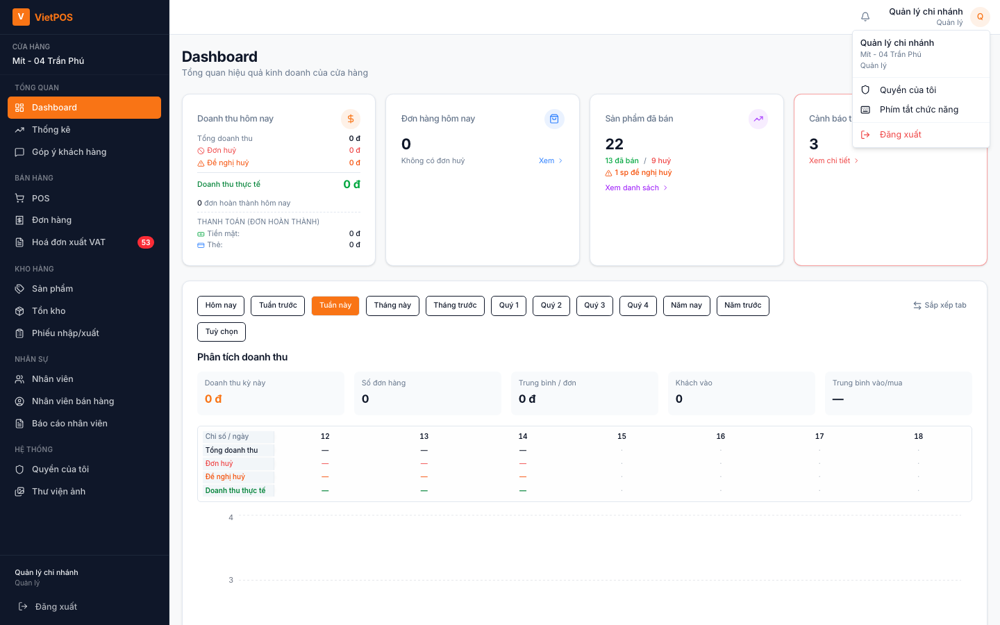

Hướng dẫn sử dụng VietPOS
Dành cho quản lý cửa hàng (manager)
1. Đăng nhập
- Mở VietPOS (Desktop hoặc trình duyệt).
- Email / mật khẩu do admin cấp → Đăng nhập.

1b. Mã PIN 4 số
Sau email/mật khẩu → nhập PIN 4 số. Sai nhiều lần → khóa 5 phút. Quên PIN → «Quên mã PIN?» (cần mạng); admin shop duyệt tại Nhân viên bán hàng.

2. Menu quản lý
Sidebar theo nhóm (tùy shop / HUB):
- Tổng quan: Dashboard, Góp ý khách hàng (và Thống kê / Dashboard chuỗi nếu được cấp)
- Bán hàng: POS, Đơn hàng, Hoá đơn xuất VAT
- Kho hàng: Sản phẩm, Tồn kho, Phiếu nhập/xuất; tại HUB: Đặt hàng, Nhà cung cấp, Hoá đơn nhập VAT
- Nhân sự: Nhân viên, Nhân viên bán hàng, Báo cáo nhân viên
- Hệ thống: Quyền của tôi, Thư viện ảnh (nếu bật)

2b. Quyền của tôi

3. Dashboard
Theo dõi doanh thu, đơn, cảnh báo tồn. Chi tiết bán hàng → Đơn hàng hoặc POS.
4. Nhân viên bán hàng & quên PIN
Menu Nhân viên bán hàng: hồ sơ NV ca, trạng thái «Đang làm».
Khung Yêu cầu quên mã PIN: duyệt «Để họ tự đặt» hoặc «Đặt PIN giúp» cho staff / quản lý / admin shop.

5. Đơn hàng & hủy đơn
Đơn hàng: xem đơn theo ngày / ca, in lại bill, ghi chú. Tab Đề nghị huỷ: duyệt hoặc từ chối yêu cầu hủy từ quầy.

6. Hoá đơn xuất VAT
Menu Hoá đơn xuất VAT: hàng đợi xuất HĐ GTGT cho đơn đã bán — phối hợp kế toán.

7. Kho & phiếu nhập/xuất
Quản lý thường duyệt / từ chối phiếu, bấm Vận chuyển (bên gửi), theo dõi tồn. Chi tiết luồng kho → xem thêm Hướng dẫn thủ kho.


8. POS (khi cần hỗ trợ quầy)
Quản lý được dùng POS như nhân viên (mở ca, bán, checkout). Quy trình chi tiết → Hướng dẫn nhân viên.
9. Sự cố thường gặp
| Hiện tượng | Việc nên làm |
|---|---|
| Không duyệt được phiếu | Kiểm tra đúng vai «bên gửi / bên nhận» theo loại phiếu |
| NV quên PIN | Nhân viên bán hàng → Yêu cầu quên mã PIN |
| Đề nghị hủy treo | Đơn hàng → tab Đề nghị huỷ → duyệt / từ chối |
| Thiết bị chưa duyệt | Báo admin shop duyệt máy |
10. Quy tắc gọn
- Ưu tiên xử lý đề nghị hủy và phiếu chờ trong ngày.
- Duyệt PIN reset chỉ sau khi xác minh danh tính NV.
- Không chia sẻ PIN / mật khẩu quản lý.
